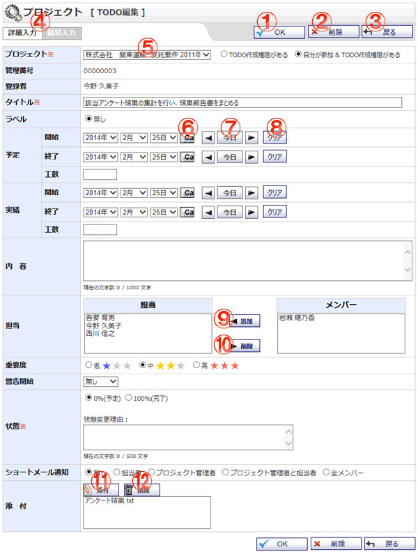

TODOを編集する画面です。

機能説明
OKボタンTODO登録確認画面へ遷移します。 |
削除ボタンTODO削除確認画面へ遷移します。TODOを削除します。 |
|---|---|
戻るボタン遷移元画面へ遷移します。 |
簡易・詳細入力切り替え簡易入力か詳細入力かを切り替えます。 |
プロジェクトコンボTODOを登録するプロジェクトが切り替わります。 |
カレンダーボタンポップアップでカレンダー画面が開きます。カレンダー画面で日付をクリックすると、クリックした日付がセットされます。 |
前日・今日・翌日ボタン年・月・日コンボを切り替えます。 |
クリアボタン年・月・日コンボを未選択状態にします。 |
追加ボタンメンバーリストで選択されているユーザを、担当リストに追加します。 |
削除ボタン担当リストで選択されているユーザを、担当リストから除外します。 |
添付ボタン添付ファイル選択画面をポップアップで表示します。ファイルを選択し、確定すると添付リストに選択したファイル名が追加されます。 |
削除ボタン添付リストで選択中の添付ファイルを削除します。 |
表示・入力項目説明
プロジェクト
プロジェクトを選択します。
タイトル
タイトルを入力します(100文字以内)。
ラベル
ラベルを選択します。
予定
開始・終了・工数を入力します。
実績
開始・終了・工数を入力します。
内容
内容を入力します(1000文字以内)。
担当
担当として設定するユーザを、メンバーリストから選択し追加します。マイプロジェクトのTODO編集の場合は表示されません。
重要度
重要度を選択します。
警告開始
警告開始を選択します。
状態
状態を選択します。
状態変更理由
状態変更理由を入力します(500文字以内)。
ショートメール通知
ショートメール通知を選択します。マイプロジェクトのTODO編集の場合は表示されません。
添付
添付するファイルを選択します。